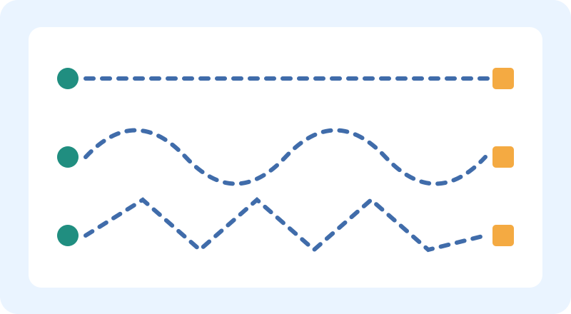

Free practice page
Follow the path
Name: ________________________
Start at the circle. Follow the dotted path to the square.

Draw a path of your own:
Free practice page
Name: ________________________
Start at the circle. Follow the dotted path to the square.

Draw a path of your own: